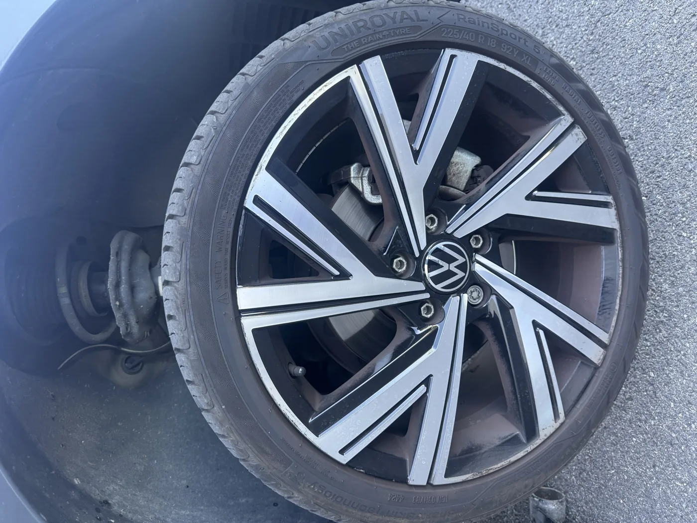
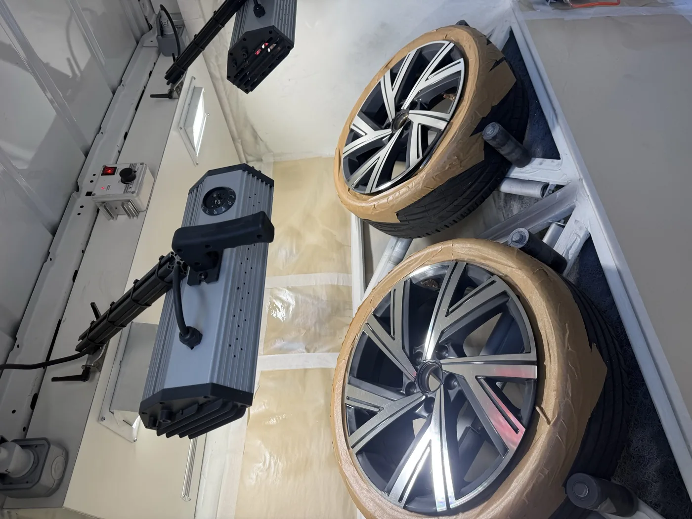
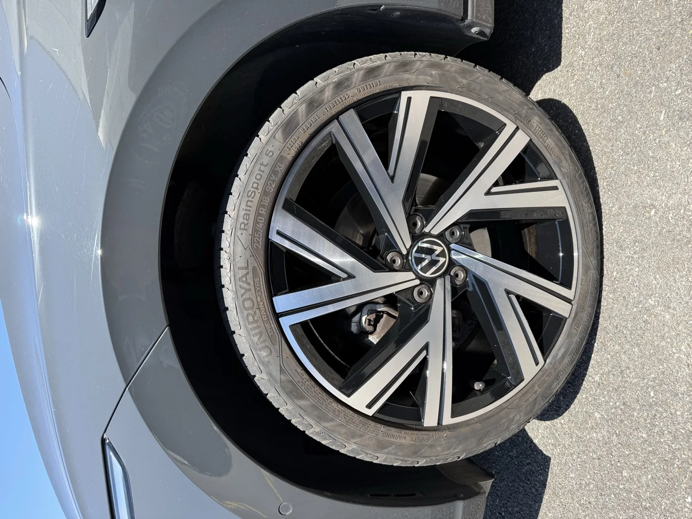

Faire rénover ses jantes à Lyon sans se déplacer — c'est possible. L'atelier REYNOV vient à votre adresse sur tout le Grand Lyon : Lyon intramuros, Jonage, Bron, Vénissieux, Villeurbanne, Meyzieu, Mions, Saint-Priest. Voici ce que ça donne en pratique, avec les photos et la vidéo d'une intervention récente.
L'état des jantes avant intervention
Frottements de trottoir, éclats de vernis, oxydation légère — les dommages classiques qui s'accumulent sur les jantes d'un véhicule utilisé au quotidien à Lyon. Parking souterrain trop serré, trottoir haut en sortie de voie rapide, nid-de-poule — chaque trajet urbain est une occasion pour les jantes de prendre des coups.

Ces dégradations sont entièrement réparables. La difficulté n'est pas dans l'intervention elle-même, mais dans la précision de la finition : retrouver exactement la teinte d'origine et appliquer le bon type de vernis pour un résultat invisible.
L'atelier mobile déployé sur place
Tout l'équipement nécessaire tient dans le véhicule atelier : poste de ponçage, cabine de séchage portable, pistolets de peinture professionnels, vernis two-stage. Rien ne manque par rapport à un atelier fixe — seul le trajet est différent.

L'installation prend environ 20 minutes. Ensuite, l'intervention dure 2 à 3h pour un jeu de 4 jantes standard, un peu plus pour des finitions complexes (bi-ton, diamantées). Le client n'a rien à gérer — la seule contrainte est de nous donner accès au véhicule pendant ce temps.
Vidéo : une intervention REYNOV en conditions réelles
De la préparation de surface au vernis final — voici le déroulé complet d'une intervention mobile. Chaque étape du processus est visible : ponçage de la zone abîmée, application de la peinture, vernis de protection.
Le résultat final
Jante revenue à son état d'origine. Les frottements ont disparu, la surface est uniforme, le vernis est identique aux zones non touchées. Sans connaître l'état initial, impossible de repérer quelle jante a été rénovée.

Vous êtes sur Lyon ou l'Est lyonnais ?
Envoyez des photos de vos jantes — devis sous 24h, intervention à domicile sur tout le Grand Lyon sans supplément.
Devis express 24hZones couvertes : Lyon et l'Est lyonnais
REYNOV intervient à domicile sur l'ensemble du Grand Lyon. Pour Lyon intramuros et les communes proches, le déplacement est inclus. Voici les secteurs couverts régulièrement :
- Lyon 1er au 9e — Parking résidentiel, box privé, parking de copropriété. On s'adapte à votre configuration.
- Villeurbanne — Nombreux résidents avec véhicules premium en parking souterrain.
- Bron — Proche de l'aéroport, beaucoup de locataires LOA longue durée.
- Jonage, Meyzieu — Maisons avec garage ou allée privée — conditions idéales pour l'intervention mobile.
- Vénissieux, Saint-Priest, Mions — Zones pavillonnaires et d'activité, flottes d'entreprise.
- Caluire-et-Cuire — Secteur résidentiel haut de gamme, nombreux véhicules premium.
Pour les zones plus éloignées, une participation aux frais de déplacement peut s'appliquer. On vous l'indique clairement dans le devis — aucune mauvaise surprise.
Pourquoi ne pas se déplacer jusqu'à un atelier ?
La question revient souvent. La réponse est simple : le service mobile ne coûte pas plus cher, et il vous fait gagner une demi-journée.
Concrètement : pas besoin d'organiser un aller-retour vers l'atelier, pas besoin d'immobiliser le véhicule sur plusieurs jours, pas de risque lié au transport d'un véhicule que vous venez de faire réparer. Et si le résultat ne vous convient pas — on est encore là, on corrige sur place.
Pour les professionnels qui ont plusieurs véhicules à traiter — gestionnaires de flotte, marchands VO, loueurs — le service mobile permet une intervention groupée sur un même site en une journée. Voir notre espace professionnels pour les tarifs dégressifs.